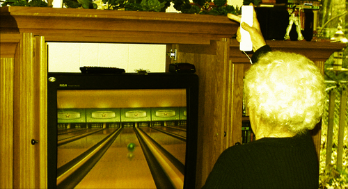

Die Kunst des Bowlings

Gestern hat es mich zum Bowling ins GILDE Bowling Hannover verschlagen. Dieser Laden ist berüchtigt für die Abstürze seiner Bahnencomputer. Unter KennerInnen kursiert das Bonmot "Wer nicht wenigstens einmal die Bahn wechseln musste, hat nicht gespielt". Klingt vielleicht etwas kryptisch, doch wer schon einmal da war, weiß wovon ich rede.
Doch als wäre der miserable Zustand der Elektronik nicht schon schlimm genug, ist uns alsbald aufgegangen, dass die Bahnen nicht aus dem richtigen Holz sind. Sie sind, wenn man es genau nimmt, nicht spielbar. Schlomo und ich haben daraufhin für uns und das uninteressierte, nicht vorhandene Publikum erörtert, worauf es ankommt:
Zuallererst muss es Holz des Virginia Knüppelahorns sein. Nur dieser ist fest und geschmeidig genug. Doch kann man nicht einfach in den Wald gehen und ein paar dieser Bäume rausziehen. Holz ist schließlich sensibel. Man muss den ersten Neumond nach dem Sprießen der Ahornzapfen abwarten, dann ist das Holz bereit geschlagen zu werden.
Allerdings kann nicht jeder Hinz oder Kunz in den Wald stolpern und einen stolzen Virginia Knüppelahorn umnieten. Dafür bedarf es fachkundiger Hand. Man muss also extra Holzfäller aus Kanada einfliegen lassen, die - mit Baströckchen bekleidet - die stolzen Knüppelahörner zu Boden bringen. Zuvor jedoch müssen sie exakt um Mitternacht eine tote, schwarze Katze über die Mauer des örtlichen Friedhofs werfen, ansonsten haben sie ein schlechtes Karma und das Holz ist dahin.
Sind die Knüppelahornbäume aber erstmal erlegt, lassen sie sich angenehm leicht in Planken zerschneiden und zu Bowlingbahnen zimmern. Kritisch wird zum Schluss nur nochmal die letze Ölung. Unbehandeltes Knüppelahornholz ist zwar schön, doch sehr unsanft zur Kugel. Deshalb braucht es ein paar gestandene, mitteleuropäische Trucker, die das Öl vorsichtig mit ihrem lockigen Schulterhaar auftragen, während ein paar barbusige Schönheiten auf Schalmeien die swasiländische Nationalhymne zum Besten geben, wodurch das Knüppelahornholz in Schwingung gerät und das Öl noch besser aufnimmt.
Zum Schluss fegt der Praktikant noch die Locken von der Bahn und schon kann der Spaß beginnen.
Einigen wird sicher aufgegangen sein, dass es gar nicht so einfach ist eine richtige Bowlingbahn zu bauen. Der Teufel steckt wie immer im Detail. Solltet ihr also beim nächsten mal eine Pumpe nach der anderen werfen, bzw. mehr Pins auf der Nachbarbahn umdengeln als auf eurer eigenen: Macht euch nichts daraus. Niemand kann von euch erwarten, dass ihr mit dem, was euch in den üblichen drittklassigen Bowlinghöllen als "Bahn" verkauft wird, arbeiten könnt.
Ich persönlich finde ja auch Billard viel besser, aber findet mal einen Tisch mit einem anständigen Filz…
(Bild: Nintendo wii! My mother-in-law Thelma wii bowling a 155!!! von Earl - What I Saw 2.0 unter CC-Lizenz)
3 Kommentare zu "Die Kunst des Bowlings"
- Externe Links im selben Fenster öffnen
- Externe Links in neuem Fenster öffnen
TediousNilsen
bowling sucks. aber das beste am gildebowling ist doch:
a) die kopie von jesus aus big lebowski, die dort rumrennt
b) der brunswick 2000: in der kulisse für enterprise waren sicherlich dieselben dinger untergebracht
c) manchmal arbeiten hübsche schülerinnen da =)
d) das bier schmeckt immer gleich......... scheiße.
Herschel Rubinstein
zu a) war nicht da.
zu b) zweifelsohne.
zu c) waren nicht da.
zu d) gesundheitsbedingt habe ich auf eine wohltuende apfelschorle zurükgegriffen.
auf jeden fall muss ich unbedingt mal das bowlingdingens am maschsee testen.
crucible
Oha, Bowling! Habe ich auch schon diverse Male mit Freunden gemacht. Aber immer wurden wir ob unserer deftigen Kesselflickerflüche argwöhnig beäugt.....
Aber, hey Leute! Bowling ist ein Sport der Arbeiterklasse. Das gehört dazu!!